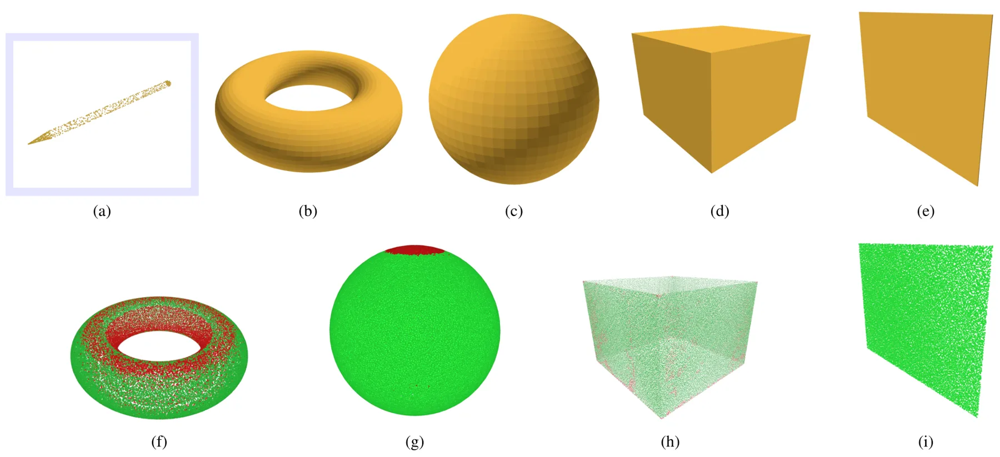
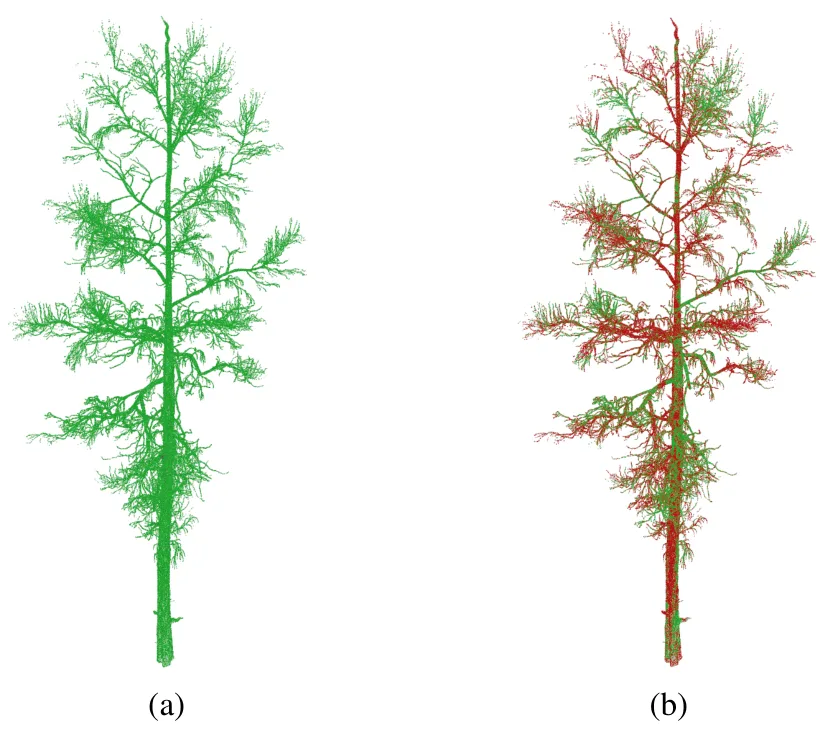
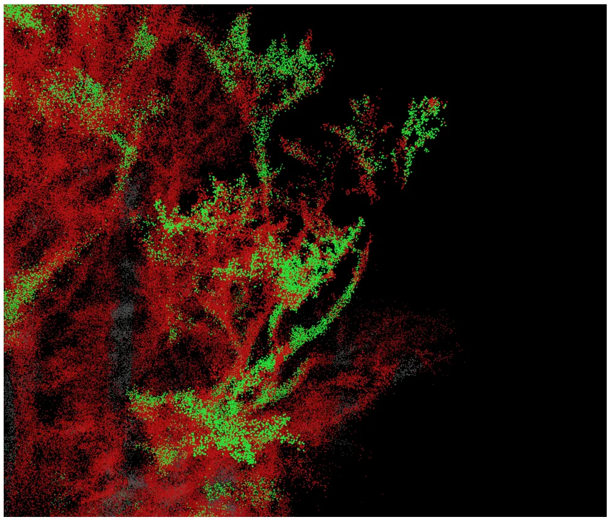
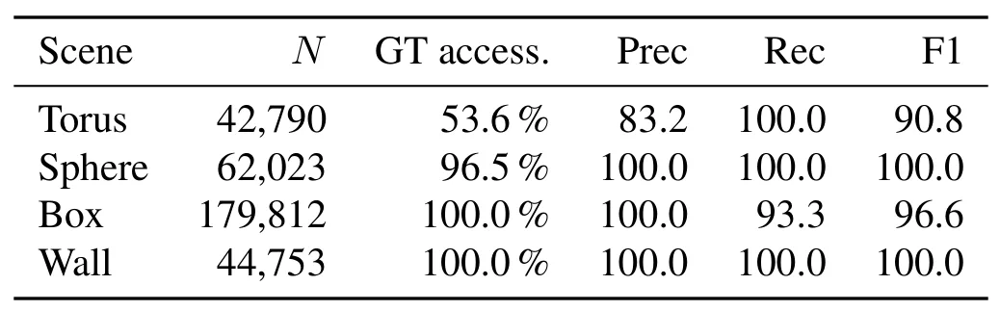
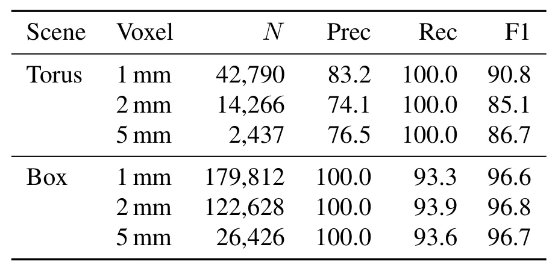
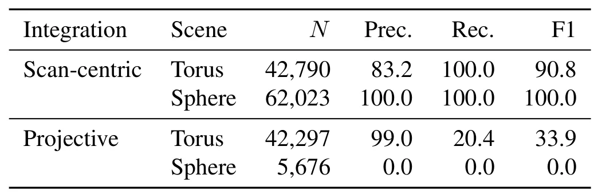
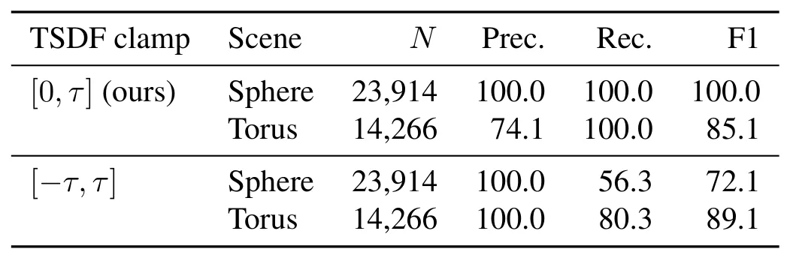
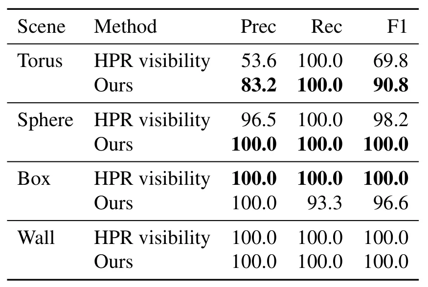
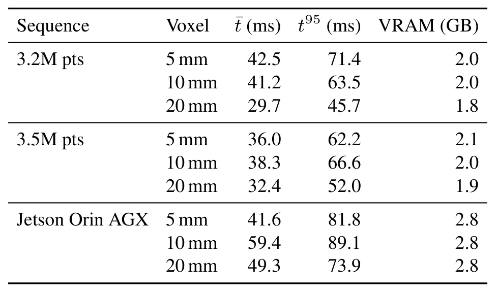

超越可见性：由稀疏 LiDAR 实时构建表面可达性场Beyond Visibility: Real-Time Surface Accessibility Fields from Sparse LiDAR
直接连接稀疏 LiDAR 建图与机器人可操作性，并报告边缘部署和量化结果；位姿误差、动态场景及方向离散化敏感性尚需核查。
一句话工作总结
在稀疏 LiDAR 的在线 TSDF 上加入工具碰撞与接近走廊约束，把“看得见”提升为实时、逐点的“够得到”。
摘要
该工作提出 Accessibility Field，从流式稀疏 LiDAR 为给定工具实时标注每个表面点是否可达。GPU 方法用预计算 geometry kernels 表示工具在多个 approach orientations 下的形状，检查工具碰撞和接近走廊净空；scan-centric TSDF 仅更新每个回波附近体素，适配 Livox Mid-360 等非重复扫描传感器。系统无需先验场景模型或固定基座，可在工作站和 Jetson Orin 上运行；混合可达几何上 F1 达 90.8，而 Hidden Point Removal 基线为 69.8。
Understanding which surfaces in a scene are physically accessible to a given tool is fundamental for robotic interaction, yet 3D perception systems typically stop at geometric reconstruction or visibility estimation. Existing geometric accessibility methods require complete, noise-free meshes and fixed kinematic bases, assumptions that fail for mobile platforms mapping incrementally from live data; visibility estimation cannot account for tool geometry or approach-corridor clearance. We propose the Accessibility Field: a per-point labelling of surface accessibility for a given tool, produced in real time from streaming sparse LiDAR and updated at sensor rate as the platform moves. Running entirely on GPU, our method evaluates each surface point against precomputed geometry kernels representing the tool at a set of rotated approach orientations, checking tool collisions and approach-corridor clearance. A scan-centric Truncated Signed Distance Field integration scheme underpins our system, updating only voxels near each observed return rather than projecting every frustum voxel each frame -- critical for nonrepetitive sensors like the Livox Mid-360, where some bins contain no returns. Our system is tool-agnostic, needs no prior scene model, and runs on workstation and Jetson Orin edge hardware. We evaluate quantitatively on synthetic objects and mature-scale Pinus radiata models, showing visibility alone is insufficient as an accessibility proxy: our method achieves F1=90.8 vs. 69.8 for a Hidden Point Removal baseline on mixed-accessibility geometry, and correctly identifies 56.8% of pine branch surfaces as inaccessible despite being visible from the sensor. To our knowledge, this is the first method to estimate per-point surface accessibility in real time from streaming sparse LiDAR without a prior scene model or fixed base frame -- a capability visibility estimation cannot provide.
中文解读摘录
- 价值：不止重建或估计可见性，而是针对给定工具对每个表面点检查工具碰撞和 approach-corridor clearance；采用 scan-centric TSDF，只更新观测回波附近体素，适配 Livox Mid-360 等非重复扫描 LiDAR。
- 结果：GPU 实现在工作站和 Jetson Orin 上运行；混合可达几何上 F1 为 90.8，对比 Hidden Point Removal 的 69.8，并识别出松树枝条中 56.8% 虽可见但不可达的表面。
- 关注点：这是“在线地图到可操作几何”的直接桥梁；后续应核查传感器位姿误差、TSDF 分辨率、工具 kernel 离散方向数与动态场景对实时性的影响。
- 链接：arXiv · PDF
图表/页面预览

{kind=link}

{kind=link}

{kind=link}

{kind=link}

{kind=link}

{kind=link}

{kind=link}

{kind=link}

{kind=link}
